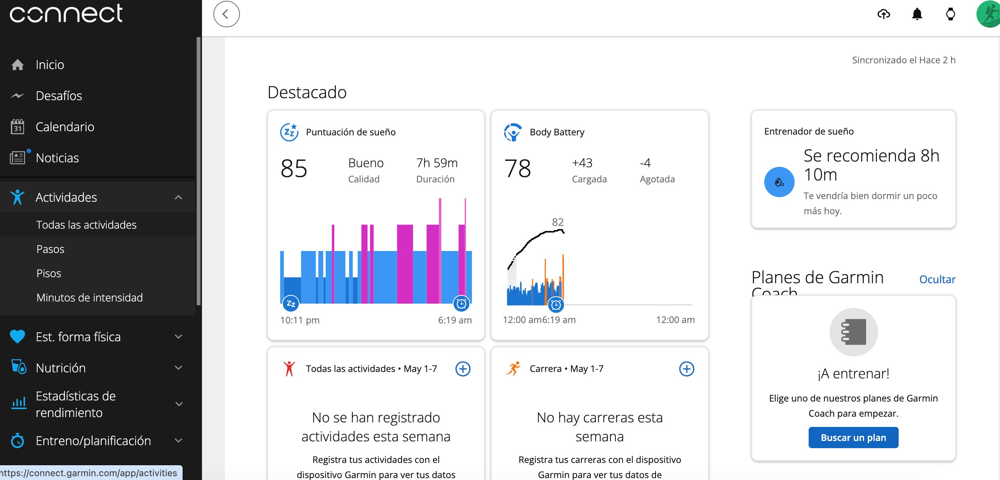

Cómo exportar tu CSV de actividades.
Son 4 pasos, no más de 30 segundos. Importante: hay que hacerlo desde la web de Garmin Connect en una computadora — la app del celular no tiene esta opción.
Entrá a Garmin Connect en tu computadora
Andá a connect.garmin.com desde el navegador y logueate con tu cuenta. Si ya estabas logueado, vas directo a la home.
Andá a Actividades → Todas las actividades
En el menú lateral izquierdo, click en "Actividades". Se despliega un sub-menú. Click en "Todas las actividades".

Cargá todas tus actividades scrolleando hacia abajo
Vas a ver una lista de tus carreras más recientes. Bajá scrolleando hasta que se carguen todas las actividades que querés exportar — Garmin va cargando en bloques a medida que llegás al final.
Click en "Exportar a CSV"
Una vez que cargaste toda tu historia, hacé click en el botón "Exportar a CSV" que está arriba a la derecha de la lista. Garmin descarga automáticamente un archivo .csv a tu computadora.

Volvé al pedido y subilo.
El archivo .csv que descargaste va en el último campo del formulario. En 48–72hs te llega tu informe.